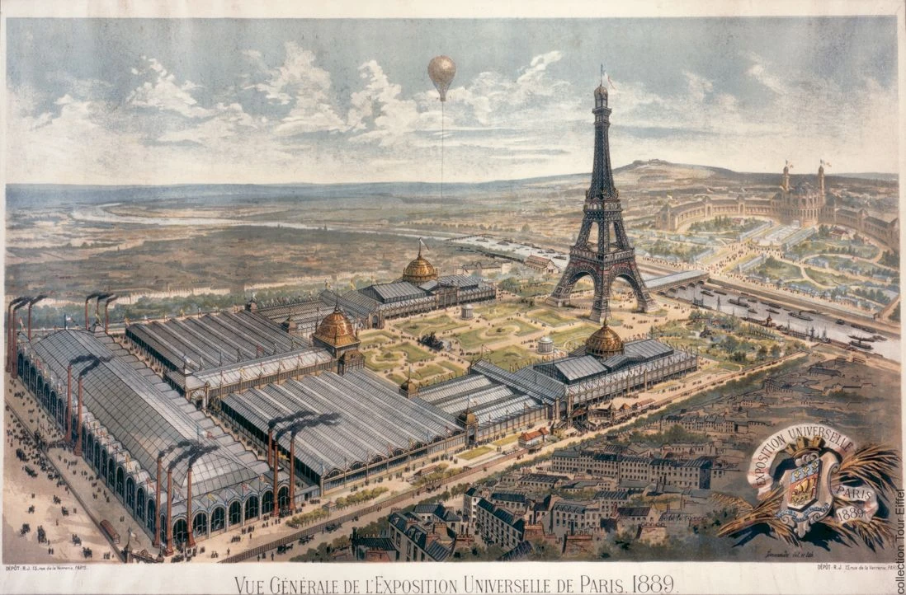

Tour Eiffel
Que voir à côté ?
Le musée du quai Branly – Jacques Chirac
Inauguré en 2006 par Jacques Chirac, le musée imaginé par l'architecte Jean Nouvel, prix Pritzker 2008, vous fait voyager au cœur des arts et civilisations d'Afrique, d'Asie, d'Océanie et des Amériques grâce aux 3 500 objets et œuvres exposées sur le Plateau des Collections, et à une riche programmation d'expositions temporaires.
en savoir plusLe musée de l’Homme
Situé face à la Tour dans le Palais de Chaillot, le musée de l'Homme apporte une vision nouvelle sur l'espèce humaine en présentant les divers aspects biologiques, culturels et sociétaux qui nous caractérisent ainsi que l'histoire de notre évolution au fil des siècles.
en savoir plusLe musée Guimet
Le musée Guimet est le plus grand musée européen entièrement dédié aux arts asiatiques. Il présente depuis plus de 130 ans une large collection d'arts asiatiques acquise durant les voyages de son fondateur éponyme, Emile Guimet.
en savoir plusLa Cité de l’architecture et du patrimoine
Avec ses 22000 m², la Cité de l'architecture et du patrimoine est le plus grand centre d'architecture au monde. Classée monument historique, elle a pour objectif de promouvoir l'architecture à travers sa bibliothèque, son musée, son école, sa programmation d’expositions temporaires, de conférences ainsi que de nombreuses activités pour le jeune public.
en savoir plus
A ne pas manquer
Riche en émotions
Illumination pour Octobre Rose
Pour le coup d’envoi de la campagne annuelle de lutte contre les cancers du sein, la tour Eiffel s'illumine en rose.
La tour Eiffel en visite virtuelle
Voyagez virtuellement au cœur du monument emblématique de Paris et découvrez la tour Eiffel comme vous ne l’avez jamais vue.
Madame Brasserie
Je suis la culture du simple et du gourmand, avec une attention en plus pour l’humain et pour l’environnement Je suis Madame Brasserie.
Notre Galerie
Photos
Construction du premier niveau de la Tour Eiffel

Vue de l'exposition universelle de Paris 1889
 La Tour Eiffel et les quais de Seine lors de l’Exposition universelle de 1889
La Tour Eiffel et les quais de Seine lors de l’Exposition universelle de 1889
Projet de Stephen Sauvestre d'aménagement de la Tour Eiffel pour l'exposition de 1900
Visiteurs empruntant les escaliers conduisant du premier au deuxième étage
Hauteur comparée de la Tour Eiffel et des principaux monuments du Monde
En 1932, un ouvrier en équilibre nettoie la Tour Eiffel
 En 1932, un ouvrier en équilibre nettoie la Tour Eiffel
En 1932, un ouvrier en équilibre nettoie la Tour Eiffel
 Charles Coutard et Joël Descuns, montent et redescendent les escaliers à moto
Charles Coutard et Joël Descuns, montent et redescendent les escaliers à moto